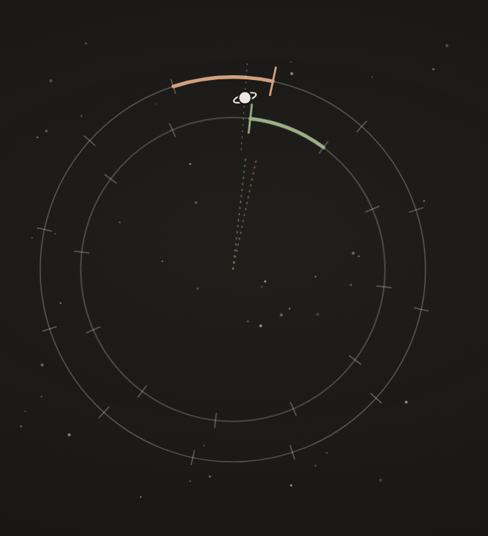

The AI kept moving Saturn. So I took the maths away from it.

Building an astrology guide that cannot guess: the key points from my post.

Building an astrology guide that cannot guess: the key points from my post.
Models learn from astrology text that mixes two systems. Asked from memory, a model blurred them: it put Saturn in one sign, then the next sign over, and invented a date that was off by months.